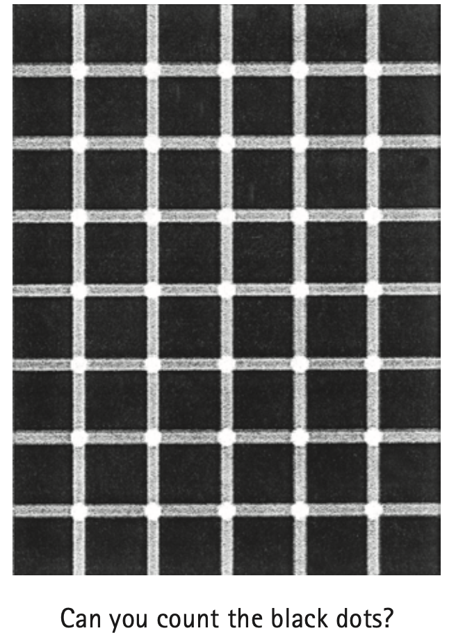
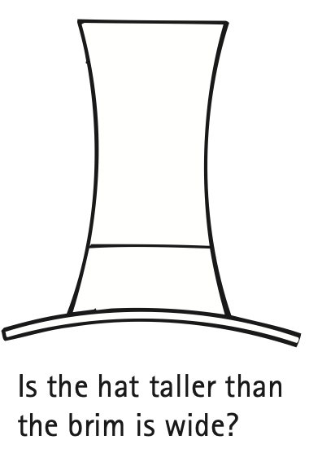

26.6 Seeing Light—The Eye
Light is the only thing we see with the most remarkable optical instrument known—the eye (Figure 26.16). As light enters the eye, it moves through the transparent cover called the cornea, which does about 70% of the necessary bending of the light before it passes through an opening in the iris (colored part of the eye). The opening is called the pupil. The light then reaches the crystalline lens, which fine-tunes the focusing of light that passes through a gelatinous fluid called the vitreous humor. Light then passes to the retina.

The retina covers the back two-thirds of the eye and is responsible for the wide field of vision that we experience. For clear vision, light must focus directly on the retina. When light focuses in front of or behind the retina, vision is blurry. Until very recently, the retina was more sensitive to light than any artificial detector ever made. The retina is not uniform. In the middle is the macula, and a small depression in the center is the fovea, the region of most distinct vision. Behind the retina is the optic nerve, which transmits signals from the photoreceptor cells to the brain.
Much greater detail can be seen at the fovea than at the side parts of the eye. There is also a spot in the retina where the nerves carrying all the information exit along the optic nerve; this is the blind spot. You can demonstrate that you have a blind spot in each eye if you hold this book at arm’s length, close your left eye, and look at Figure 26.17 with your right eye only. You can see both the round dot and the X at this distance. If you now move the book slowly toward your face, with your right eye fixed upon the dot, you’ll reach a position about 20–25 cm from your eye where the X disappears. Now repeat this exercise with only the left eye open, looking this time at the X, and the dot will disappear.

When you look with both eyes open, you are not aware of the blind spot, mainly because one eye “fills in” the part to which the other eye is blind. Amazingly, the brain fills in the “expected” view even with one eye open. Repeat the exercise of Figure 26.17 with small objects on various backgrounds. Note that, instead of seeing nothing, your brain gratuitously fills in the appropriate background. So you not only see what’s there—you also see what’s not there!
The retina is composed of tiny antennae that resonate to the incoming light. There are two basic kinds of antennae, the rods and the cones (Figure 26.18). As the names imply, some of the antennae are rod-shaped and some cone-shaped. The rods predominate toward the periphery of the retina, while the cones are denser toward the fovea. Rods handle vision in low light, and cones handle color vision and detail. There are three types of cones: those that are stimulated by low-frequency light, those that are stimulated by light of intermediate frequencies, and those that are stimulated by light of higher frequencies. The cones are very dense in the fovea itself, and, since they are packed so tightly, they are much finer or narrower there than elsewhere in the retina. We see color most acutely by focusing an image on the fovea, where there are no rods. Primates and a species of ground squirrel are the only mammals that have all three types of cones and experience full color vision. The retinas of other mammals consist primarily of rods, which are sensitive to only lightness or darkness, like a black-and-white photograph or movie.
Figure 26.18 was omitted because no matching captured image was supplied.
In the human eye, the number of cones decreases as we move away from the fovea. It’s interesting that the color of an object disappears if it is viewed on the periphery of the visual field. This can be tested by having a friend enter your periphery of vision with some brightly colored objects. You will find that you can see the objects before you can see what color they are.
Another interesting observation is that the periphery of the retina is very sensitive to motion. Although our vision is poor from the corner of our eye, we are sensitive to anything moving there. We are “wired” to look for something jiggling to the side of our visual field, a feature that must have been important in our evolutionary development. So have your friend shake those brightly colored objects when she brings them into the periphery of your vision. If you can just barely see the objects when they shake, but not at all when they’re stationary, then you won’t be able to tell what color they are (Figure 26.19). Try it and see!

Another distinguishing feature of the rods and cones is the intensity of light to which they respond. The cones require more energy than the rods before they will “fire” an impulse through the nervous system. If the intensity of light is very low, the things we see have no color. We see low intensities with our rods. Dark-adapted vision is almost entirely due to the rods, while vision in bright light is due to the cones. Stars, for example, look white to us. Yet most stars are actually brightly colored. A time exposure of the stars with a camera reveals reds and red-oranges for the “cooler” stars and blues and blue-violets for the “hotter” stars. The starlight is too weak, however, to fire the color-perceiving cones in the retina. So we see the stars with our rods and perceive them as white or, at best, only faintly colored. Females have a slightly lower threshold of firing for the cones, however, and can see a bit more color than males. So if she says she sees colored stars and he says she doesn’t, she is probably right!
We find that the rods “see” better than the cones toward the blue end of the color spectrum, and the reverse is true at the other end of the spectrum. As far as the rods are concerned, a deep red object might as well be black. Thus, if you have two colored objects—say, one blue and one red—the blue one will appear much brighter than the red in dim light, although the red one might be much brighter than the blue one in bright light. The effect is quite intriguing. Try this: In a dark room, find a magazine or something that has colors, and, before you know for sure what the colors are, judge the lighter and darker areas. Then bring the magazine into the light. You should see a remarkable shift between the brightest and dimmest colors.6
6 This phenomenon is called the Purkinje effect after the Czech physiologist who discovered it.
The rods and cones in the retina are not connected directly to the optic nerve but, quite amazingly, are connected to many other cells that are joined to one another. While many of these cells are interconnected, only a few carry information to the optic nerve. Through these interconnections, a certain amount of information is combined from several visual receptors and “digested” in the retina. In this way, the light signal is “thought about” before it goes to the optic nerve and thence to the main body of the brain. So some brain functioning occurs in the eye itself. The eye does some of our “thinking” for us. This thinking is betrayed by the iris, the colored part of the eye that expands and contracts and regulates the size of the pupil, admitting more or less light as the intensity of light changes. It so happens that the expansion or contraction of the iris is related to our emotions. If we see, smell, taste, or hear something that is pleasing to us, our pupils automatically increase in size. If we see, smell, taste, or hear something repugnant to us, our pupils automatically contract. Many card players have betrayed the value of a hand by the size of their pupils! (The study of the size of the pupil as a function of attitudes is called pupilometrics.)

The brightest light that the human eye can perceive without damage is some 500 million times brighter than the dimmest light that can be perceived. Look at a nearby lightbulb. Then turn to look into a dimly lit closet. The difference in light intensity may be more than a million to one. Because of an effect called lateral inhibition, we don’t perceive the actual differences in brightness. The brightest places in our visual field are prevented from outshining the rest because whenever a receptor cell on our retina sends a strong brightness signal to our brain, it also signals neighboring cells to dim their responses. In this way, we even out our visual field, which allows us to discern detail in very bright areas and in dark areas as well. (Cameras are not so good at this. A photograph of a scene with strong differences of intensity may be overexposed in one area and underexposed in another.) Lateral inhibition exaggerates the difference in brightness at the edges of places in our visual field. Edges, by definition, separate one thing from another. So we accentuate differences. The gray rectangle on the left in Figure 26.21 appears darker than the gray rectangle on the right when the edge that separates them is in our view. But cover the edge with your pencil or your finger, and they look equally bright. That’s because both rectangles are equally bright; each rectangle is shaded lighter to darker, moving from left to right. Our eye concentrates on the boundary where the dark edge of the left rectangle joins the light edge of the right rectangle, and our eye–brain system assumes that the rest of the rectangle is the same. We pay attention to the boundary and ignore the rest.


Questions to ponder: Is the way the eye selects edges and makes assumptions about what lies beyond similar to the way in which we sometimes make judgments about other cultures and other people? Don’t we, in the same way, tend to exaggerate the differences on the surface while ignoring the similarities and subtle differences within?





